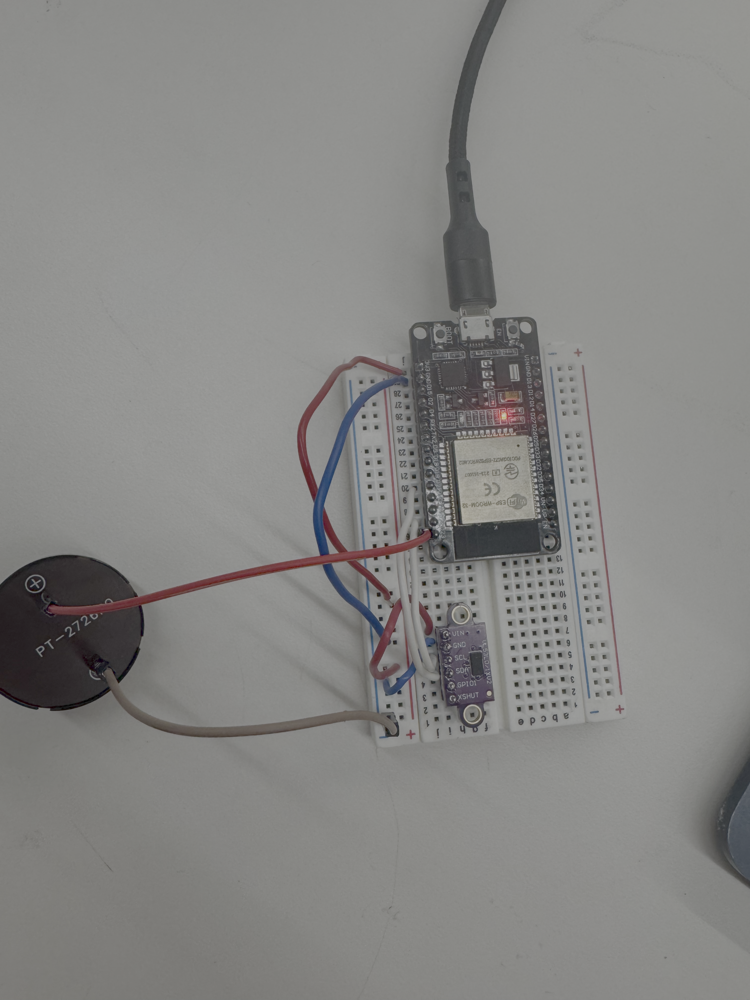

<div class="textcontainer">
<p class="margin"> </p>
<h3>Week 9: Radio, WiFi, Bluetooth (IoT)</h3>
<p class="margin"> </p>
<div class="flexrow">
<a id="btn" href="wifibuzzer.ino.zip" download> Download Arduino Code </a>
</div>
<p class="margin"> </p>
<h4>Assignment: Phone Controlled Distance Buzzer </h4>
<p style="color:black; font-size:18px;">
This week I linked my distance sensor and a buzzer to my phone by using my ESP32 as an accesspoint. I select the ESP32 in wifi and then go to my API and can view the distance output and can control the buzzer. My web interface displays the distance up top and than it has the option to turn on or off a buzzer warning for when the distance gets short. The idea here is that as you add weight to a car, when you are getting close to your limit, the buzzer goes off. This means you dont have to check the display constantly while loading, or if you forget, the buzzer will warn you before any damage is dealt. Sometimes though, you might need to use the max weight, or you might have upgraded your suspension in which case the buzzer won't be helpful, but will just be annoying. In this case you can just turn off the alarm feature and then it won't buzz, regardless of the distance. Right now I have it set so that, when on, the buzzer goes off for five seconds if the distance is less than 50 mm, but these parameters can be easily adjusted.
</p>
<div style="display: flex; gap: 10px; align-items: flex-start; flex-wrap: wrap;">
<video controls style="height:440px; max-width:100%;">
<source src="buzzercircuitvideo.MOV" type="video/mp4">
</video>
<p></p>
<img src="buzzerapi.png" alt="API Interface" width="40%">
</div>
</div>
</div>